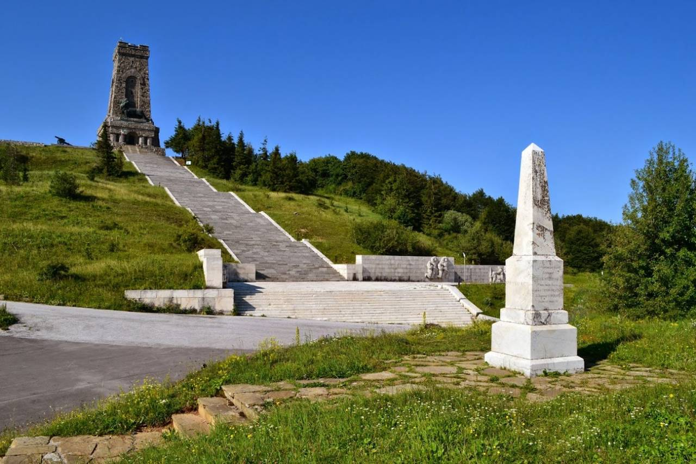

 The Liberty Memorial is the symbol of modern Bulgaria and the liberation of Bulgaria. The monument is the heart of the Shipka National Park-Museum and is located on Shipka Peak. Its outline resembles a medieval Bulgarian fortress and can be seen from dozens of kilometres. It was built with donations from the people from all over Bulgaria and was inaugurated on 26 August 1934. In 1877, the Russian-Turkish War began, which brought Bulgaria liberation from the Ottoman yoke. This liberation was preceded by bloody battles in which Bulgarian militias fought shoulder-to-shoulder with soldiers from the Russian Empire. The fighting at Shipka Pass began in the summer of 1877 and lasted for several months. Russian General Fyodor Radetsky reported daily to army headquarters that everything was calm on Shipka, and this phrase became a catchphrase. However, the calm did not indicate peace - artillery shelling was carried out constantly. Finally, in early January, the Russian army gathered its last forces and went on the offensive, which ended in victory over the Turkish troops. The defence of Shipka became a landmark event that preceded the liberation of Bulgaria from Ottoman rule, which lasted almost five centuries. Today, a monument has been erected at the top, to which flowers are laid annually on March 3 - the day the peace treaty was signed in San Stefano, when Bulgaria became a free country. A road and a wide staircase lead to the monument. In August, on the anniversary of the start of the defence of Shipka, battle reconstructions are held here. These events include a memorial service for the Russian soldiers and Bulgarian militias who died here.